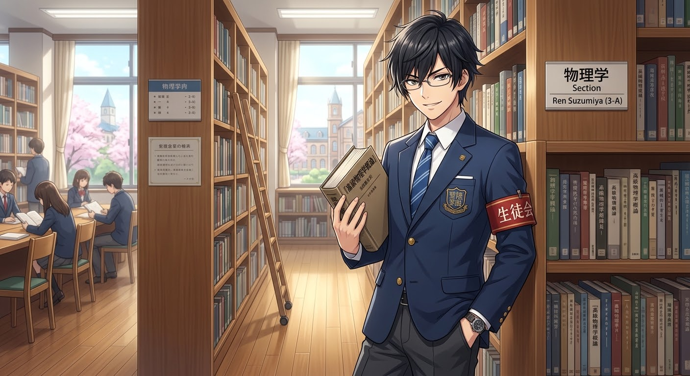
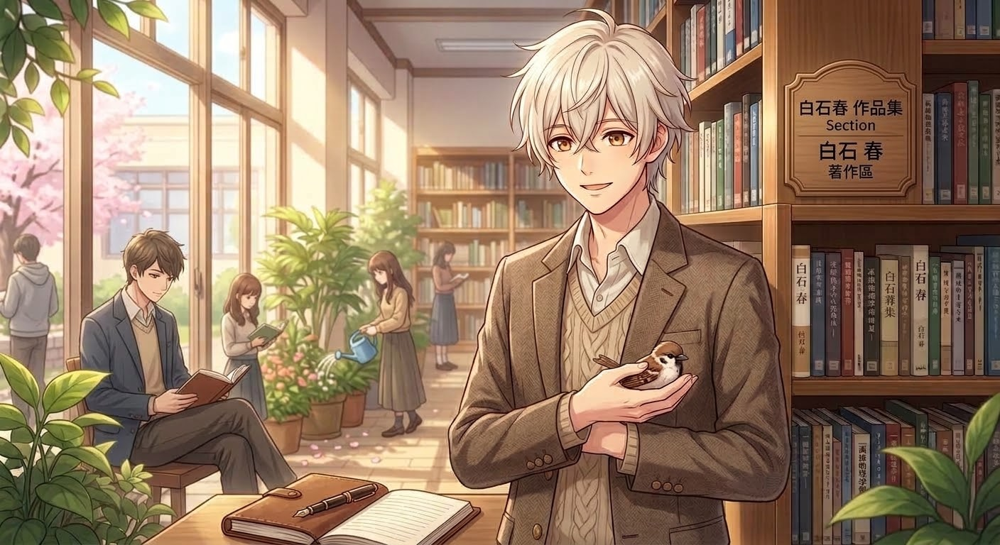

01 ／ 03THE QUIET SCHOLAROTOME ROUTE · 攻擊型
涼宮 蓮 Ren Suzumiya
圖書館・物理學習
「別誤會了，我只是順便幫你複習日文而已！」
MEET角色選擇
STORY序章劇情
GROW養成圖鑑
RECRUIT招募結果
CHARACTER PORTRAITS ✦ 0.24
三幅全新場景立繪，把角色的日常、夢想與說不出口的心情帶到你眼前。

01 ／ 03THE QUIET SCHOLAROTOME ROUTE · 攻擊型
圖書館・物理學習
「別誤會了，我只是順便幫你複習日文而已！」
OTOME ROUTE · 霸道主唱
聚光燈下・音樂舞台
「湊近一點，這句日文我只想唱給你聽。」

03 ／ 03THE GENTLE WRITEROTOME ROUTE · 溫柔作家
午後圖書館・寫作時光
「每個單字都是一封還沒寄出的情書。」
WHAT'S NEW ✦ RELEASE 0.24
在選角、最愛與隊伍畫面，透過專屬圖像認識你的伴學夥伴。
進入劇情與角色詳情時，完整呈現各自的代表場景，保留原圖寬幅構圖。
凜與春已加入既有角色資料與招募池；取得後即可在圖鑑中查看，機率與保底都不變。
YOUR STORY IS WAITING
選一位想一起學習的角色，把日語單字變成靠近彼此的理由。